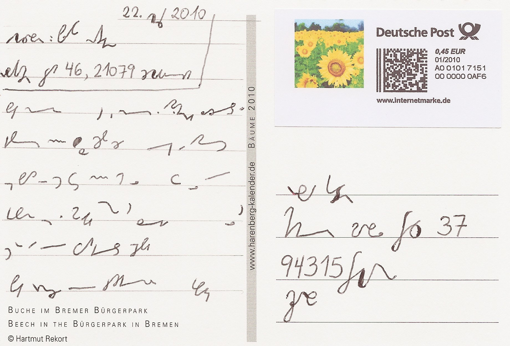
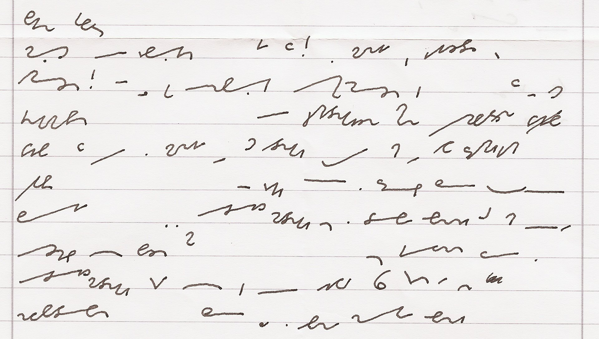

International
InternationalŻywa Stiefografia w Niemczech
2011-06-26 | autor: flamenco108Poniższa historyjka daje do myślenia na wielu poziomach. Po pierwsze primo, że nauczanie stenografii, choćby korespondencyjne, ale jednak wciąż jest żywe u naszych zachodnich sąsiadów. Opisana niżej historia wydarzyła się we wrześniu 2010 roku, czyli niedawno. Po drugie primo, że wciąż jest wielu, naprawdę wielu Niemców, którzy potrafią te wężyki czytać, a być może i pisać. A po trzecie primo, jest interesująca ze stenograficznego punktu widzenia:
Oto pewien blogger z Niemiec uczy się stenografii w odmianie Stiefografie. Postanowił wysłać swojemu nauczycielowi eksperymentalną kartkę pocztową: w całości zapisaną systemem Stiefografie, a zaadresowaną oficjalnym, jednolitym niemieckim systemem DEK.

Komentatorzy pod wpisami zgłaszali wątpliwości, czy na poczcie w ogóle ktokolwiek rozpozna to jako stenografię, a nie potraktuje jak jakiś kawał, albo bełkot chorego idioty… A tymczasem, jak wynika z dalszej części relacji, kartka pocztowa doszła, że tak powiem, śpiewająco! Nauczyciel odpowiedział klasycznym listem, zaadresowanym pismem długim, ale treść zapisał w systemie Stiefografie:

Drogi Filipie,
trudno w to uwierzyć, ale to prawda! Kartka naprawdę dotarła! Kiedy wróciłem ze swoich wakacji, czekała w mojej skrzynce pocztowej. Przyklejona do niej była odręczna notatka w piśmie długim z moim adresem. Zatem na poczcie naprawdę są jeszcze ludzie, którzy uczyli się w szkole Zunifikowanego Systemu Stenografii Niemieckiej (Einheitskurzschrift, DEK) w szkole i stąd potrafią przynajmniej jeszcze go odczytać. Być może wiesz, że DEK był nauczany w szkołach realnych Bawarii jeszcze sześć lat temu. (…)
Czy taka historia mogła by się wydarzyć u nas? Chyba już nie. Porównajmy szybko popularność stenografii po naszej i po ich stronie Odry: u nas w tej chwili działa jedna, umierająca organizacja zrzeszająca (a właściwie mająca to w statucie, a nie faktycznie co robiąca) stenografów. Tam do dziś aktywnych jest ponad 200 takich organizacji. Tym optymistycznym akcentem pozwalam sobie zakończyć dzisiejszy wpis.
2011-06-26 autor: flamenco108